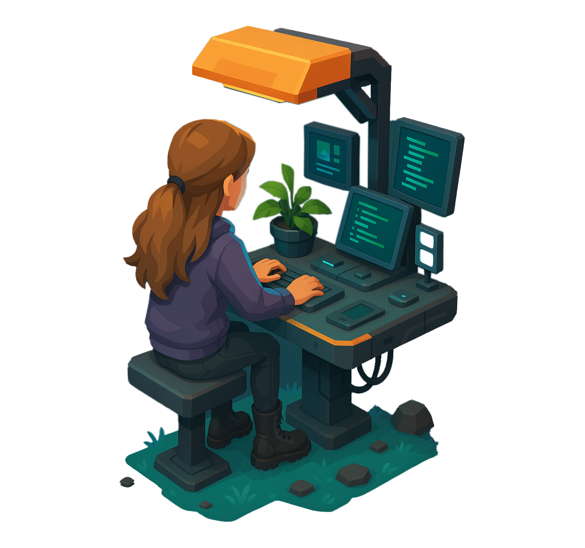
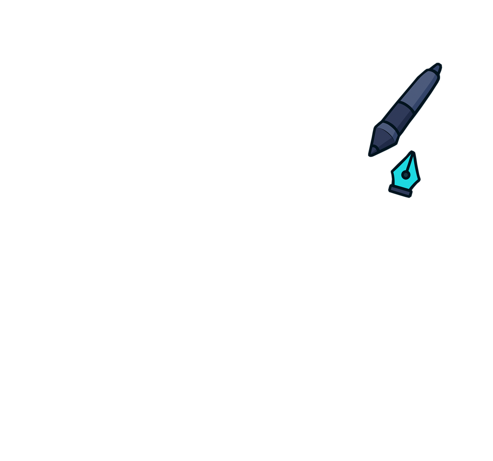

Creative Designer
Developer & Data Thinker
Crafting digital experiences that balance creativity, technology, and measurable impact.



Welcome, I’m Tyler
Designer. Developer. Data Thinker.
I create digital experiences that balance creativity with measurable performance, where design, data, and technology work together with purpose. With a background in Creative Technology and Game Development, I approach projects with both a creative eye and a systems mindset, blending design thinking, technical craft, and data insight. Over the past few years, my focus has been on design and development, along with SEO, SEM, and analytics. I enjoy creating websites that not only look and feel right but also perform, grounded in data, usability, and genuine audience insight. I regularly work with AI tools and data analytics to improve efficiency, uncover trends, and inform design decisions. My current goal is to deepen my skills in business intelligence, strengthening the link between creative work and measurable outcomes. I see the digital world as an evolving ecosystem, where creativity and data inform one another, and where meaningful design is backed by understanding, adaptability, and purpose.Skills: Designer · Developer · HTML/CSS · UX & Interaction Design · SEO/SEM · Data Analytics · AI Tools · Reporting & Insights · Unity Prototyping · Motion & Microinteractions
DISCOVER
- Research
- Ideation
- Strategy
DESIGN
- UI / UX
- Prototyping
- Visual Design
- Animatics
DEPLOY
- Development
- Testing
- UX Research
- Amend
Selected Work
A few recent projects and digital builds.
Other Projects
Games, creative coding experiments, and interactive digital art.


Let’s build something
Available for freelance & contract work — hello@tylermcluckie.com